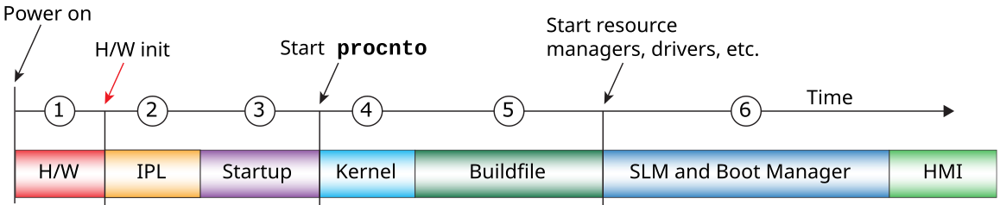

A QNX OS system boot involves, in sequence, the IPL, the startup program, the OS, and, optionally, resource managers such as device drivers or utilities such as SLM.
Both the startup program and the OS image are present in an image filesystem
(see Image Filesystem (IFS)
in this chapter).
A useful way to think about the boot process and its components is that each step provides greater abstraction from the hardware. The IPL is specific to an architecture, board, and sometimes even board revision. The startup code is specific to an architecture and board. And, generally speaking, an OS kernel can work with different boards that share an architecture.
The figure below shows a more detailed view of the boot tasks, which includes the tasks handled by the hardware, and those that happen after the OS has started (such as launching an application). With the exception of the tasks that the hardware and firmware control, you can control the entire boot sequence, including tasks that happen after the OS has started and applications are launched.

Traditionally, the location where the processor begins execution has been a hard-coded address, known as the reset vector. However, some boards support using a component such as a ROM monitor or Multimedia card LOader (MLO) to identify where the processor should begin execution after the hardware- and firmware-controlled tasks are complete.
The IPL performs the minimum hardware configuration needed to create an environment that
allows the startup program and the QNX OS kernel to run, then
locates and loads the image filesystem (IFS), and transfers control to the startup program in
the image (see Image Filesystem (IFS)
).
The startup program configures the system, including timers, interrupt controllers, and cache
controllers (see Startup program
in this chapter, and the
Startup Programs chapter).
When it has completed the configuration, this program transfers control to the OS kernel.
The kernel is included in the procnto module, which combines the kernel and process manager. This module sets up the kernel, then runs the instructions specified in a script in the buildfile used to generate the OS image. This script contains startup instructions for drivers and other processes, and any additional commands for running other required components.
The buildfile may specify most or all applications that will run on the system, or include only a few applications, leaving the majority to be started later.
When all of the commands in the buildfile have completed successfully, the QNX system has finished booting.
System Launch and Monitor (SLM)).
On ARM platforms, the reset vector is normally at address 0x00000000, so the boot device (NOR flash or other first-stage boot device) is mapped to this physical address. On x86 platforms, the reset vector is usually at 0xFFFFFFF0. Some boards support retrieving the execution entry point from a component such as a ROM monitor or an MLO.